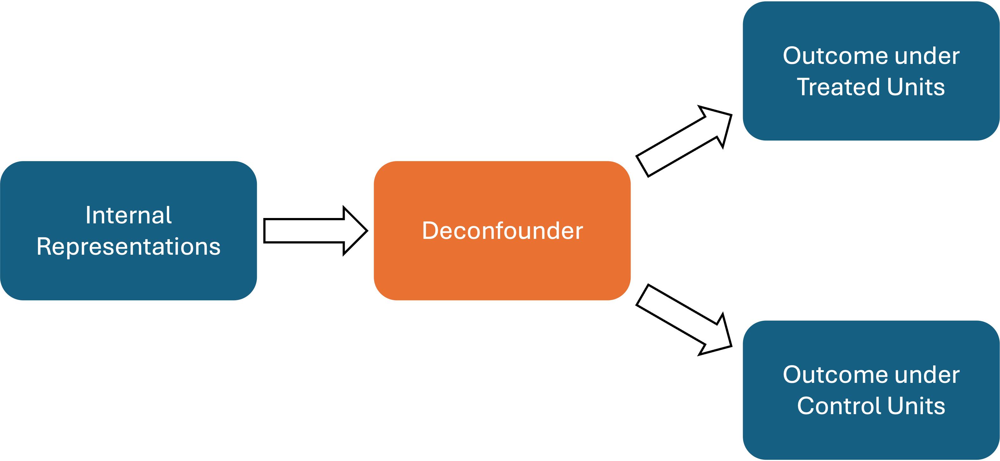

Customizing Your Analysis
While gpi_pack offers a wrapper function estimate_k_ate that handles the entire process of GPI, you may need to customize your analysis to fit your specific needs. In this section, we will show how to customize your analysis by using the functions provided in gpi_pack.
The entire estimation procedure consists of the following three steps:
Estimate deconfounder and outcome models by TarNet.
Estimate propensity score models based on the estimated deconfounder.
Estimate the causal effects using double machine learning.
Below, we explain each key component of the estimation procedure and then show how to estimate the treatment effect wihtout using the wrapper function estimate_k_ate.
TarNet
TarNet is a neural network architecture we use to learn the deconfounder. TarNet takes the internal representation of LLM as input and predicts outcomes under treatment and control simultaneously using the shared deconfounder. The architecture of TarNet is shown below.
{kind=link}
gpi_pack provides a class TarNet that implements the TarNet architecture. You can use this class to estimate the deconfounder and outcome models. Below is an example of how to use the TarNet class. Note that you need to split the sample into training and test sets before using the TarNet class.
from gpi_pack.tarnet import TarNet
from sklearn.model_selection import train_test_split
# split the sample into training and test sets
R_train, R_test, Y_train, Y_test, T_train, T_test = train_test_split(
hidden_states, #R: internal representation of LLM
Y, #Y : outcome variable
T, # T : treatment variable
test_size=0.5,
)
# intialize the TarNet model
model = TarNet(
epochs = 100, # number of epochs
batch_size = 32, # batch size
learning_rate = 0.001, # learning rate
architecture_y = [200, 1],
architecture_z = [512],
dropout = 0.1
)
# fit the model to the data
model.fit(
R = R_train, # internal representation of LLM
y = Y_train, # outcome variable
treatment = T_train, # treatment variable
)
# Obtain the estimated deconfounder and outcome models
y0_pred, y1_pred, deconfounder = model.predict(R = R_test)
For the specific hyperparameters of the TarNet class, please refer to TarNet.
Propensity Score Model
Once we obtain the estimated deconfounder, we are ready to estimate the propensity score model. The propensity score model is used to estimate the probability of receiving treatment given the observed deconfounder. You can use any flexible machine learning model to estimate the propensity score; however, as our input is the estimated deconfounder, the model needs to possess a desirable property known as Lipschitz continuity.
For this reason, gpi_pack provides a propensity score model SpectralNormClassifier, which is the neural network model with the spectral normalization. Below is an example of how to use the SpectralNormClassifier class.
from gpi_pack.TNutil import SpectralNormClassifier
# initialize the propensity score model
ps_model = SpectralNormClassifier(
epochs = 100, # number of epochs
batch_size = 32, # batch size
learning_rate = 0.001, # learning rate
architecture = [200, 1],
dropout = 0.1
)
# fit the model to the data
ps_model.fit(
X = deconfounder, # estimated deconfounder
y = T_test, # treatment variable
)
# Obtain the estimated propensity score
ps_pred = ps_model.predict(X = deconfounder)
For the specific hyperparameters of the SpectralNormClassifier class, please refer to SpectralNormClassifier.
Estimation Workflow
Because we estimate the propensity score based on the estimated deconfounder, cross-fitting becomes more complicated than in standard double machine learning. Specifically, we must split the sample into two halves, estimate the deconfounder and outcome models on one half, and then estimate the propensity score on the other half. This process is repeated for both halves of the sample.
gpi_pack provides a function estimate_psi_split that implements this cross-fitting procedure once you obtain the outcome models and deconfounder. Below is an example of how to use the estimate_psi_split function.
import numpy
from gpi_pack.TNutil import estimate_psi_split
# estimate the propensity score using cross-fitting
psi, ps_pred = estimate_psi_split(
fr = deconfounder, # estimated deconfounder
t = T_test, # treatment variable
y = Y_test, # outcome variable
y0 = y0_pred, # predicted outcome under control
y1 = y1_pred, # predicted outcome under treatment
plot_propensity = True, # whether to plot the propensity score distribution
)
ate = numpy.mean(psi) # estimate the average treatment effect
se = numpy.std(psi) / numpy.sqrt(len(psi)) # estimate the standard error of the ATE
For the specific hyperparameters of the estimate_psi_split function, please refer to estimate_psi_split.